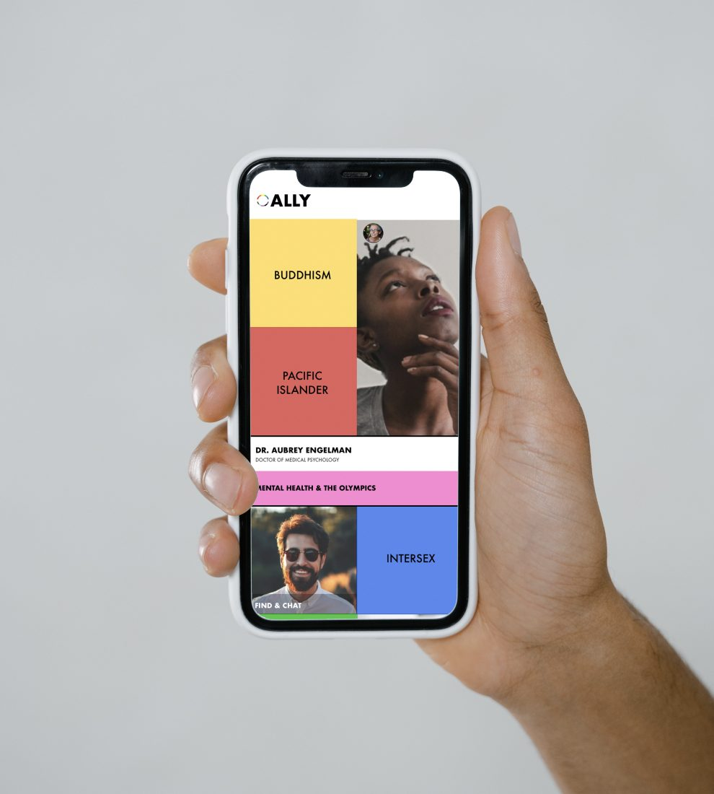
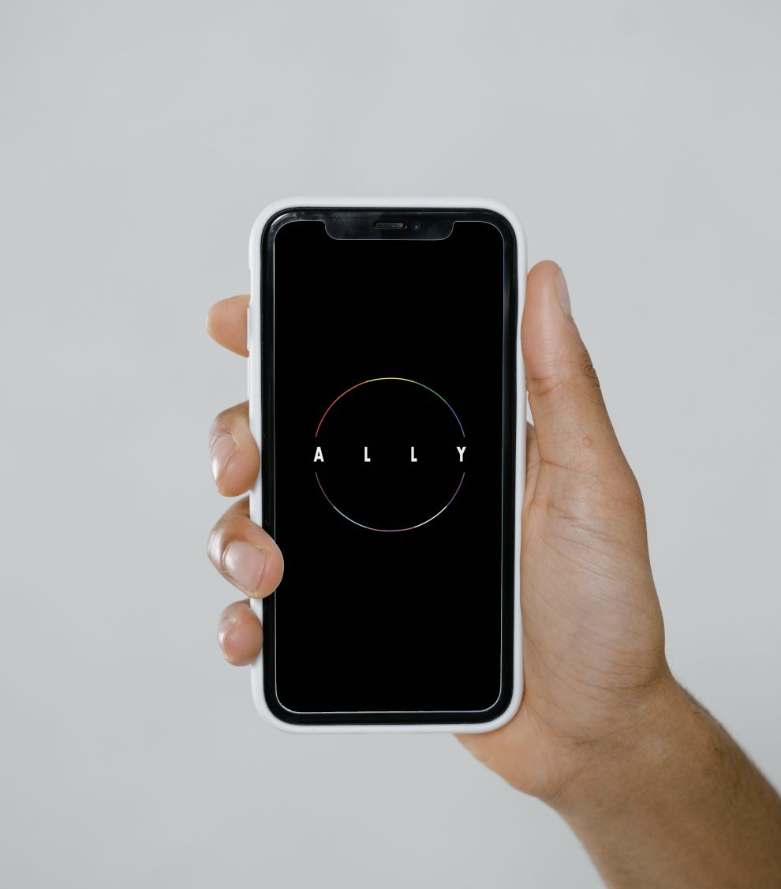
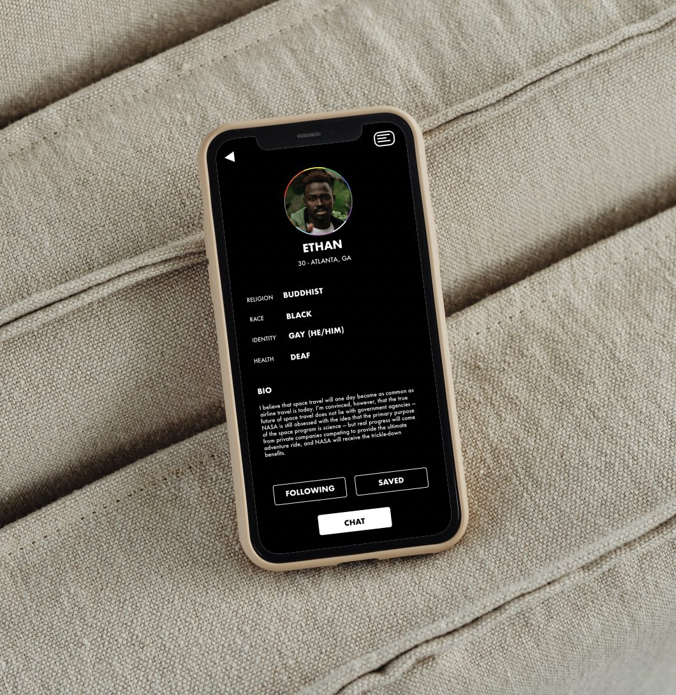
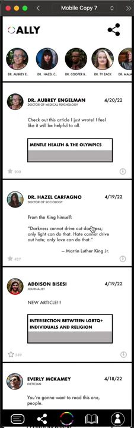

A place to ask what you are nervous to ask.
An app for learning about other cultures, races and communities, built around the thing that actually stops people: the anxiety of asking.
- Role
- Product design, UX and UI
- Year
- Concept
- Scope
- Mobile app, design system
- Status
- Concept


Why I made it
The main focus of this project is how I could help people everywhere learn more about other cultures. Over the past couple of years I have learned that there is far more misunderstanding about cultures around the world than I thought. There is a lot of prejudice, racism, stereotyping and ethnocentrism, and the main reason for it is a lack of understanding.
Part of why that misunderstanding holds is that people do not know where to go to find answers. Asking someone face to face makes them nervous, or causes real anxiety, so they never ask at all.
The goal
The goal of the app is to lower that anxiety and create a safe place where people can learn and talk openly about other cultures, race and communities, and feel comfortable doing it. In return they gain a better understanding. That would benefit a lot of people.
How it works
Anyone can use it. Inside the app there are multiple options for what you want to learn about, and once you choose one you can watch videos, read articles and listen to audio recordings on that topic.
The home screen is a color blocked grid rather than a list, so each topic reads as its own place rather than a row in a database. Nothing is ranked above anything else, which matters when the list is of people.
Profiles carry identity as structured fields, so a person states as much or as little as they want to. Articles are attributed to named contributors with their credentials visible, because on this subject who is speaking matters as much as what is said.


Next project
What To Do